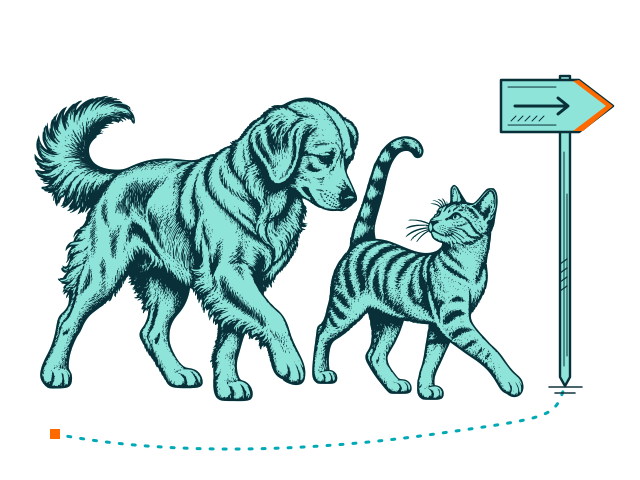
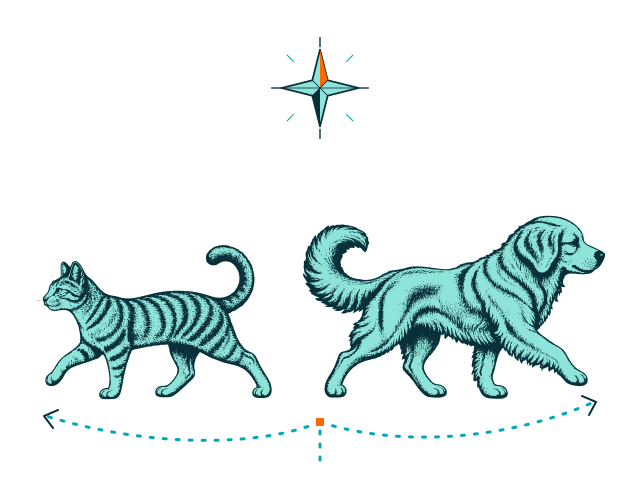

DNAture · Biblioteca gráfica
Dos formas de descubrir.
Un perro y un gato: juntos en la visita guiada, cada uno por su camino en la exploración libre.

Visita guiada
Una mirada compartida y un paseo tranquilo. Los dos descubren el camino acompañados.
Descargar SVG de visita guiada

Vista a 192 px

Explorar por mi cuenta
El gato toma el camino de la izquierda y el perro el de la derecha. Cada uno descubre a su propio ritmo.
Descargar SVG de exploración libre

Vista a 192 px